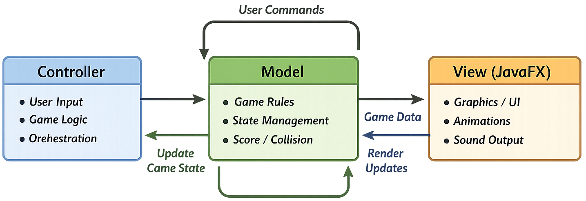

A JavaFX Frogger game refactored into an MVC architecture with design-pattern improvements and a strong unit-test suite,
plus gameplay features.
My Contributions
MVC refactor: Restructured the original Frogger codebase into a clear Model–View–Controller architecture, improving separation of concerns and reducing tight coupling.
Test-driven improvements: Built a comprehensive unit test suite (78 tests) using JUnit + Mockito, focusing on game logic and controller behaviour while keeping UI concerns isolated.
Design patterns & maintainability: Applied maintainability-focused refactoring (SOLID principles, dependency injection where appropriate) and addressed common code smells to make the codebase easier to extend.
Feature extensions: Implemented gameplay and UX additions such as settings (volume/difficulty), timed ending, save checkpoints, and optional hazards (e.g., dinosaur events) to enrich the original loop.
Persistence & leaderboard: Added a Top-10 leaderboard backed by a local score database, including score submission and retrieval integrated into the menu flow.
Technical Breakdown
Architecture (MVC):
Refactored the codebase into a clear Model–View–Controller structure. Game rules and state updates live in the Model,
the JavaFX rendering stays in the View, and input + orchestration are handled by Controllers. This separation reduced
coupling and made feature additions (settings, leaderboard, checkpoints) predictable.

Testing & Maintainability:
Built a unit-test suite (78 tests) with JUnit and Mockito to validate core logic without relying on UI automation.
Used mocking to isolate dependencies and refactored toward SOLID-style responsibilities to remove common code smells
and make behaviour easier to verify.
Focus: Model + Controller behaviour (rules, collisions, scoring, state transitions).
Approach: Mockito for dependency isolation; avoid fragile end-to-end UI tests where possible.
Outcome: safer refactors and faster iteration when extending the game.
Features & Persistence:
Extended the original Frogger with usability and gameplay improvements, plus persistent scoring.
Settings: user-adjustable options (e.g., volume / difficulty) integrated into the menu flow.
Leaderboard: Top-10 scores stored and loaded from a local database for repeatable evaluation.
Project Management
I managed development with a GitLab-first workflow: small feature branches, frequent merges, and CI checks to keep the
game always buildable. The implementation was test-driven refactoring—unit tests protected core logic while I iterated
on features and architecture.
Branching & integration:
Worked on isolated feature branches, merged into develop and then into
main. This kept changes reviewable and avoided “big-bang” integration.
CI / build verification:
Used automated builds as a quality gate (build must pass before merge). This provided fast feedback and reduced
last-minute breakages when combining features.
Test-driven refactoring:
Maintained a unit-test suite (focused on controllers and models) and used mocking (Mockito) to isolate logic.
UI/View was validated via manual / end-to-end checks rather than unit tests.
Refactor milestones (maintainability):
Re-structured the code into clear packages and an MVC architecture - Model for data/resources and game entities,
View for JavaFX UI/backgrounds, and Controllers for gameplay orchestration. This reduced coupling and made later
additions (settings, leaderboard, checkpoints) more predictable.
Results
Delivered a refactored and extended Frogger game with a maintainable MVC architecture. The final build includes
new gameplay/UX features (settings, timed ending, hazards) and a persistent Top-10 leaderboard, supported by a
comprehensive unit test suite.
What shipped
MVC refactor with clearer separation of game rules (Model), rendering (View), and orchestration (Controllers).
Top-10 leaderboard with local persistence (score submission + retrieval in the menu flow).
Engineering highlights
78 unit tests using JUnit, with Mockito to isolate dependencies and test controller/model logic.
Refactoring focused on maintainability: reduced coupling, improved package structure, and removed code smells.
GitLab workflow: feature branches merged into develop/main with build checks to keep the project always runnable.
Evaluation
Evaluated through automated unit testing for core logic plus manual gameplay validation for UI flows. The focus was
stability during refactoring (no regressions), correctness of scoring/state transitions, and feature reliability after merges.
Test coverage
Model rules: collisions, scoring, win/lose conditions, and timed ending behaviour.
Controller logic: input handling, scene/state switching, and menu → gameplay → results flow.
Persistence: leaderboard read/write and edge cases (empty/invalid entries).
Iteration highlights
Used tests to safely refactor toward MVC without breaking gameplay behaviour.
Fixed bugs discovered during feature-branch integration (e.g., Dino/audio/test issues) and re-ran builds.
Refined UI/UX details (menus, icons, settings defaults) after quick play checks.
Each project page follows the same structure:
TL;DR → demo → my role → tech breakdown → Project Management → Result & Evaluation.
That consistency helps reviewers compare quickly.